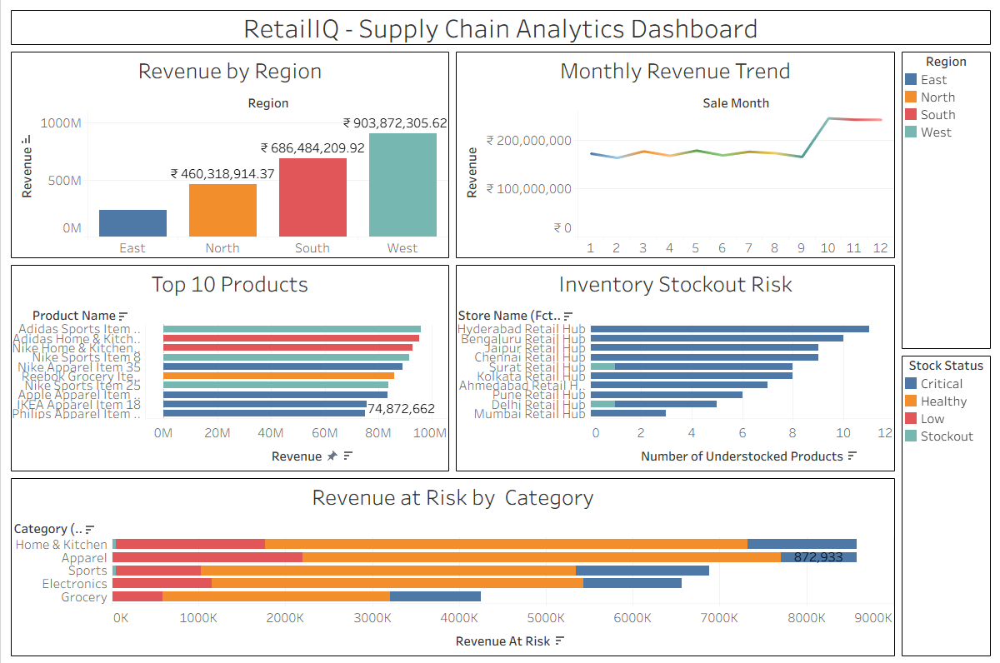

DATA ANALYTICS PORTFOLIO
Transforming business data into strategic decisions through data analytics, visualization, and data-driven storytelling.
Retail Transactions Analysed
Revenue at Risk Identified
Featured Case Studies
M.Sc. Data Science SGPI
Projects Completed
Technical Skills
BUSINESS-DRIVEN ANALYTICS
I specialize in transforming raw business data into meaningful insights that improve operational efficiency, reduce risk, and support strategic decision-making. My work combines SQL, Python, business intelligence tools, and analytical thinking to solve real-world business challenges across Retail, Banking, and Supply Chain domains.
Every analysis begins with understanding the business objective before selecting the appropriate analytical approach.
I convert complex datasets into dashboards and reports that enable stakeholders to make confident decisions.
From SQL queries to machine learning models, I build complete analytical workflows that deliver measurable business value.
I continuously expand my knowledge of analytics, cloud platforms, visualization tools, and modern data technologies.
FEATURED CASE STUDIES
A collection of end-to-end analytics projects focused on solving real-world business challenges using SQL, Python, Power BI, Excel, and Machine Learning.
An end-to-end Power BI analytics solution built to monitor inventory, supplier performance, sales trends, and operational KPIs for retail decision-makers.
Retail managers lacked a centralized view of sales, inventory, and supplier performance, making operational decisions slow and reactive.
Built an interactive Power BI dashboard by integrating cleaned retail datasets to track KPIs, inventory movement, supplier efficiency, and sales performance.
Enabled faster executive reporting, improved inventory planning, and provided data-driven support for procurement and sales decisions.


A machine learning solution developed to identify customers at risk of churn and support proactive retention strategies through predictive analytics and interactive dashboards.
Banks struggled to identify customers likely to leave, resulting in ineffective retention campaigns and increased customer acquisition costs.
Built a predictive machine learning model with a Power BI dashboard to analyze customer behavior, churn probability, and key influencing factors.
Enabled data-driven customer retention by identifying high-risk customers before churn occurred.
An end-to-end analytics solution developed to evaluate supplier performance, procurement efficiency, purchasing trends, and operational KPIs.
Procurement teams lacked visibility into supplier performance, purchasing efficiency, and cost trends, limiting effective vendor management.
Built SQL-driven analytics with Power BI dashboards to evaluate vendor performance, purchasing trends, inventory costs, and supplier reliability.
Improved procurement visibility, reduced supplier risk, and supported data-driven sourcing decisions.

TECHNICAL EXPERTISE
My technical toolkit spans programming, analytics, business intelligence, machine learning, and data engineering, enabling me to deliver complete analytical solutions.
ANALYTICS WORKFLOW
Every project follows a structured approach—from understanding the business objective to delivering actionable recommendations that create measurable business value.
Understand the problem, KPIs, stakeholders and business goals.
Collect data from databases, files and business systems.
Handle missing values, duplicates and inconsistencies.
Identify patterns, trends and relationships in the data.
Create predictive models or executive dashboards.
Present insights and recommend actions backed by data.
PROFESSIONAL EXPERIENCE
My experience spans data analytics training, teaching, and leadership, enabling me to combine technical expertise with communication, collaboration, and business problem-solving.
2024 – 2026
Top Performer (SGPI: 9.27)
Data Science
2021 – 2024
Physics
Mathematics & Scientific Computing
ACHIEVEMENTS
Key accomplishments that reflect academic excellence, leadership, and hands-on experience in analytics.
Graduated M.Sc. Data Science with an SGPI of 9.27, securing the highest academic performance in class.
Completed a Certification in Data Analyst Trainee Program involving SQL, Python, Excel, and Power BI on real business datasets.
Served as General Secretary of the Placement Cell, coordinating activities between professors, managements, team members and students.
Developed end-to-end analytics solutions across customer churn, supply chain, and vendor performance case studies.
CERTIFICATIONS
I continuously strengthen my analytical and technical skills through industry-recognized learning platforms and hands-on projects.
Google Career Certificates
CompletedProfessional Training
CompletedProfessional Training
CompletedProfessional Learning
CompletedCONTACT
Whether it's a full-time opportunity, internship, collaboration, or simply a discussion about data analytics, I'd be glad to connect.
husainkhan225322@gmail.com
+91 99677 41381
Mumbai, Maharashtra, India